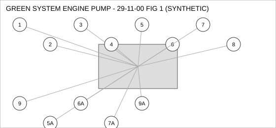
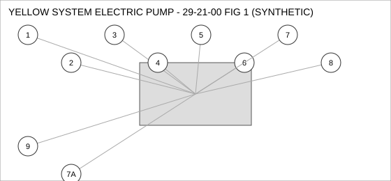
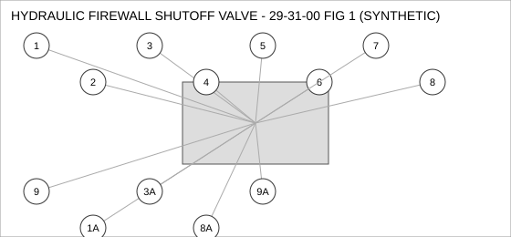

Document type: IPC | Revision: 15 | Fleet: A320
| CODE | AIRCRAFT |
|---|---|
| A | A320ceo |
| B | A320neo |
| C | A321neo |

| FIG ITEM | PART NUMBER | NOMENCLATURE | EFFECT | UPA |
|---|---|---|---|---|
| 1 | D23935801200 | VALVE - CHECK, GREEN SYSTEM ENGINE PUMP | ALL | 2 |
| 2 | D27205392800 | VALVE - SHUTOFF, GREEN SYSTEM ENGINE PUMP | C | 1 |
| 3 | D28868460400 | SWITCH - PRESSURE, GREEN SYSTEM ENGINE PUMP | ALL | 1 |
| 4 | D29978901300 | BOLT, GREEN SYSTEM ENGINE PUMP | ALL | 1 |
| 5 | D23936962000 | CONNECTOR - ELECTRICAL, GREEN SYSTEM ENGINE PUMP | ALL | 1 |
| 5A | D24119877300 | CONNECTOR - ELECTRICAL, GREEN SYSTEM ENGINE PUMP | ALL | 1 |
| INTERCHANGEABLE WITH D23936962000 (TWO-WAY). | ||||
| 6 | D20976274300 | SEAL - O-RING, GREEN SYSTEM ENGINE PUMP | B C | 4 |
| SUPERSEDED BY D24483771100 | ||||
| 6A | D24483771100 | SEAL - O-RING, GREEN SYSTEM ENGINE PUMP | B C | 4 |
| REPLACES D20976274300. THIS PART MAY REPLACE D20976274300; D20976274300 MAY NOT BE USED TO REPLACE THIS PART. | ||||
| 7 | D27387260300 | GASKET, GREEN SYSTEM ENGINE PUMP | B C | 2 |
| 7A | D21791308100 | GASKET, GREEN SYSTEM ENGINE PUMP | B C | 2 |
| ALTERNATE FOR D27387260300. PARTS ARE INTERCHANGEABLE. | ||||
| 8 | D29329735500 | CLAMP - V-BAND, GREEN SYSTEM ENGINE PUMP | ALL | 1 |
| 9 | D22155352400 | SEAL - FLANGE, GREEN SYSTEM ENGINE PUMP | ALL | 2 |
| 9A | D24938216200 | SEAL - FLANGE, GREEN SYSTEM ENGINE PUMP | ALL | 2 |
| ALTERNATE FOR D22155352400 AFTER INCORPORATION OF SB 29-0388. | ||||

| FIG ITEM | PART NUMBER | NOMENCLATURE | EFFECT | UPA |
|---|---|---|---|---|
| 1 | D24876483300 | GASKET, YELLOW SYSTEM ELECTRIC PUMP | ALL | 1 |
| 2 | D21584719600 | SWITCH - PRESSURE, YELLOW SYSTEM ELECTRIC PUMP | ALL | 1 |
| 3 | D28474386900 | SEAL - O-RING, YELLOW SYSTEM ELECTRIC PUMP | C | 2 |
| 4 | D20639464900 | PUMP - TRANSFER, YELLOW SYSTEM ELECTRIC PUMP | ALL | 4 |
| 5 | D27204426000 | SOLENOID, YELLOW SYSTEM ELECTRIC PUMP | A | 4 |
| 6 | D20827905000 | HOSE ASSEMBLY, YELLOW SYSTEM ELECTRIC PUMP | ALL | 1 |
| 7 | D25419227300 | FITTING - ELBOW, YELLOW SYSTEM ELECTRIC PUMP | ALL | 4 |
| 7A | D20912544900 | FITTING - ELBOW, YELLOW SYSTEM ELECTRIC PUMP | C | 4 |
| INTERCHANGEABLE WITH D25419227300 - A321NEO ONLY. | ||||
| 8 | D27939695700 | CLAMP - V-BAND, YELLOW SYSTEM ELECTRIC PUMP | ALL | 1 |
| 9 | D28477322400 | VALVE - CHECK, YELLOW SYSTEM ELECTRIC PUMP | A | 1 |

| FIG ITEM | PART NUMBER | NOMENCLATURE | EFFECT | UPA |
|---|---|---|---|---|
| 1 | D26164937400 | BOLT, HYDRAULIC FIREWALL SHUTOFF VALVE | ALL | 1 |
| 1A | D28116304100 | BOLT, HYDRAULIC FIREWALL SHUTOFF VALVE | A | 1 |
| INTERCHANGEABLE WITH D26164937400 - A320CEO ONLY. | ||||
| 2 | D21058963600 | VALVE - CHECK, HYDRAULIC FIREWALL SHUTOFF VALVE | ALL | 4 |
| 3 | D22769674900 | FITTING - ELBOW, HYDRAULIC FIREWALL SHUTOFF VALVE | B C | 2 |
| SUPERSEDED BY D29578035200 | ||||
| 3A | D29578035200 | FITTING - ELBOW, HYDRAULIC FIREWALL SHUTOFF VALVE | B C | 2 |
| REPLACES D22769674900. THIS PART MAY REPLACE D22769674900; D22769674900 MAY NOT BE USED TO REPLACE THIS PART. | ||||
| 4 | D20392852200 | HOSE ASSEMBLY, HYDRAULIC FIREWALL SHUTOFF VALVE | C | 1 |
| 5 | D26382218700 | WASHER - LOCK, HYDRAULIC FIREWALL SHUTOFF VALVE | ALL | 2 |
| 6 | D29216534200 | CONNECTOR - ELECTRICAL, HYDRAULIC FIREWALL SHUTOFF VALVE | ALL | 1 |
| 7 | D29655653400 | SENSOR - PRESSURE, HYDRAULIC FIREWALL SHUTOFF VALVE | C | 1 |
| 8 | D28322043800 | SEAL - FLANGE, HYDRAULIC FIREWALL SHUTOFF VALVE | ALL | 1 |
| SUPERSEDED BY D25314135100 | ||||
| 8A | D25314135100 | SEAL - FLANGE, HYDRAULIC FIREWALL SHUTOFF VALVE | ALL | 1 |
| SUPERSEDES D28322043800. D28322043800 IS NOT INTERCHANGEABLE WITH THIS PART (ONE-WAY). | ||||
| 9 | D28999248900 | SENSOR - TEMPERATURE, HYDRAULIC FIREWALL SHUTOFF VALVE | A B | 1 |
| 9A | D22104770700 | SENSOR - TEMPERATURE, HYDRAULIC FIREWALL SHUTOFF VALVE | B C | 1 |
| ALTERNATE FOR D28999248900 ON A320NEO ONLY. | ||||